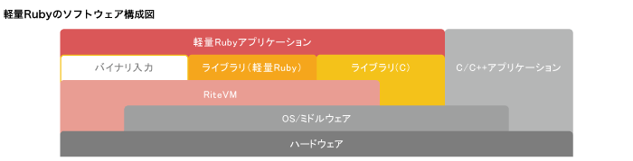

mruby をさわってみた
mruby とは
組込み向けに軽量化されたRuby。mruby 単体で実行するというよりは、組み込み機器や Cなどで書いたアプリのなかに、まるごとmrubyアプリケーション+実行環境を組み込んで利用する感じ。

mruby を MacOSX 上でコンパイル
mruby をさわるため、まずソースからコンパイルする。コンパイルは拍子抜けするほど簡単。以下が必要だが、Command Line Tools をいれてれば足りる。
環境
- gcc
- ruby
- bision
手順
ソースのダウンロード(2fe556d)
12git clone https://github.com/mruby/mrubycd mrubyコンパイル(速い)
12345678$ time ruby minirake(in /Users/PMAC051S/src/github.com/mruby/mruby)CC src/array.c -> build/host/src/array.oCC src/backtrace.c -> build/host/src/backtrace.o:real 0m14.238suser 0m8.442ssys 0m3.884s
コンパイルされたもの
こんなファイルが出来る。
|
|
- mirb: mruby の irb
- mrbc: mruby スクリプトのコンパイラ。mrb 形式などを出力する。
- mrdb: mruby のデバッガ。
- mruby: mruby のインタプリンタ
- mruby-strip: ???
- libmruby.a: mruby のライブラリ
それぞれ使ってみた
mirb
irb の mruby 版
|
|
mrbc
mruby スクリプトをデフォルトだと mrb 形式にコンパイルする。
mrb 形式というのは、mruby の独自フォーマットでプラットフォーム非依存。mrb 形式については、いずれ調査したい。
|
|
|
|
|
|
|
|
C形式はどうやって使うのかも不明なので今度調べる。mrb_read_irep(mrb, hello) で読み込む？
mruby
mruby のインタプリンタ。mrb形式のファイルを渡す場合は、-b オプションで。
|
|
libmruby.a
Cから利用する際のライブラリ。
|
|
|
|
ちなみにアーカイブに入っていたオブジェクトファイルは以下のような感じだった。
mrbd
デバッガ。gdb と似たような感じ。
|
|